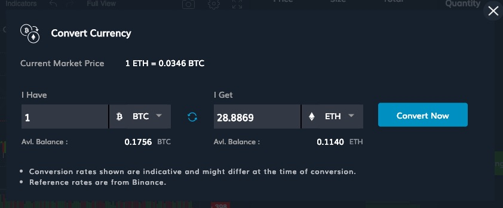

Trade Life Cycle
Funding exchange wallet
Bitcoin is the only funding currency on Delta Exchange. This means that you can deposit bitcoins to your Delta wallet and withdraw only bitcoins from your Delta wallet. After logging on to Delta Exchange, you need to go to your Account Page to get your bitcoin deposit address and to learn how to withdraw bitcoin from Delta Exchange.
Currency conversion
Even though bitcoin is the only funding currency on Delta Exchange, not all futures contracts are settled in bitcoin. For example, we have stablecoin-settled contracts where the margining and settlement happens in USDC. Therefore, you’d need USDC for trading these futures contracts. Since we currently don’t support deposit/ withdrawal of USDC (or for that matter any other crypto apart from bitcoin), we have provided a currency converter tool that enables users to change bitcoin to the desired cryptocurrency.

It is worth noting that the exchange rate offered in the currency conversion is in line with the prevailing rates at the top spot exchanges. Further, currency conversion doesn’t attract any trading fees.
Placing an order
Orders can be placed in Place Order Panel in the trading dashboard. We support both basic order types (e.g. limit order and market orders) as well as several advanced order types (e.g. Stop orders and bracket orders). Details of the all the supported order types are available here
Margin & PnL Calculations
A new order is allowed to be submitted to the exchange only if the trader has sufficient balance available to reserve the order margin. Order margin computation happens in one of the two ways:
-
Trader doesn’t have an existing position in the contract: the system computes the initial margin that would be required if this position is acquired. This is the amount that is blocked as order margin.
-
Trader has an existing position in the contract: in this case, the system computes the margin required for the updated overall position after the placed order has been executed. The difference between this computed margin requirement and the current position margin is what is additionally needed for this order. This is the amount that is block as order margin.
Details on the various types of margins and their calculations are available here.
Fair Price Marking
Existing positions on Delta are marked at fair Price. This means that your unrealised PnL and hence the current value of margin allocated to a particular position are a function of the marked price. PnL calculations are illustrated with examples in the PnL Math section.
Settlement
You can square off a position in a derivatives contract in the exchange. Position that are held till maturity are cash settled at a price that is computed using the settlement method described in the contract specifications.